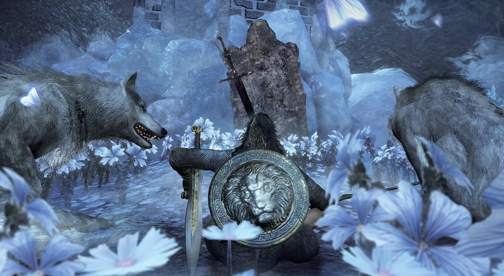

← Volver
← Volver
El Guardián de Tumbas del Campeón y el Gran Lobo Guardián de tumbas es un jefe de Dark Souls III. Es parte del DLC Cenizas de Ariandel.
Al encontrarlo, el Guardián de Tumbas del Campeón está con tres lobos cerca de una tumba. Está cubierto en armadura y empuña una espada y un escudo, con un set de movimientos similar al de los enemigos normales. Luego de que su barra de salud caiga hasta cierto punto, invocará al Gran Lobo Guardián de Tumbas, un lobo significativamente más grande que los otros tres.
Mientras no es una batalla de jefe particularmente difícil, algunos jugadores puede sentirse abrumados al intentar lidiar con ambos jefes al mismo tiempo, por lo que se recomienda derrotar al Guardián de Tumbas del Campeón lo antes posible. No hay invocaciones de NPCs disponibles para esta batalla. Mientras no se active la batalla, los jugadores fantasma no puede entrar a la arena del jefe. Este jefe es opcional y no es requerido derrotarlo para progresar en el DLC.
¿Dónde encontrar al Guardián de Tumbas del Campeón en Dark Souls III? En el Mundo Pintado de Ariandel. Corta la soga del puente que lleva a la catedral donde se encuentra la Hermana Friede y utilízalo para descender hasta el fondo, similar a como se desciende desde las Catacumbas de Carthus hasta el Lago Ardiente. Sobre un lado de la tierra congelada se encuentra un área abierta con flores donde puedes dejarte caer. Acercarte a las ruinas activará la batalla de jefe.
| Playthrough | NG | NG+ | NG++ | NG+3 | NG+4 | NG+5 | NG+6 | NG+7 |
|---|---|---|---|---|---|---|---|---|
| Solo Souls | 60000 | 120000 | 132000 | 135000 | 144000 | 147000 | 150000 | 153000 |
| Co-op Souls (1/4) | 30000 | 60000 | 66000 | 67500 | 72000 | 73500 | 75000 | 76500 |
Esta es la cantidad de Almas que obtendremos tras vencer a la Hermana Friede en los diferentes ciclos de juego, desde el New Game regular hasta NG+7.
| Playthrough | NG | NG+ | NG++ | NG+3 | NG+4 | NG+5 | NG+6 | NG+7 |
|---|---|---|---|---|---|---|---|---|
| Vida Total | 2,791 | 2,794 | 3,074 | 3,213 | 3,353 | 3,632 | 3,772 | 3,912 |
| Tipo de Daño | Básico | Golpe | Cortante | Empuje | Mágico | Fuego | Rayo | Oscuridad |
|---|---|---|---|---|---|---|---|---|
| Absorciones | 42% | 39% | 44% | 41% | 43% | 39% | 39% | 43% |
| Playthrough | NG | NG+ | NG++ | NG+3 | NG+4 | NG+5 | NG+6 | NG+7 |
|---|---|---|---|---|---|---|---|---|
| Vida Total | 4,193 | 4,197 | 4,617 | 4,827 | 5,037 | 5,457 | 5,666 | 5,876 |
| Tipo de Daño | Básico | Golpe | Cortante | Empuje | Mágico | Fuego | Rayo | Oscuridad |
|---|---|---|---|---|---|---|---|---|
| Absorciones | 5% | 10% | 2% | -2% | 5% | -16% | 7% | 7% |

 ↑
↑